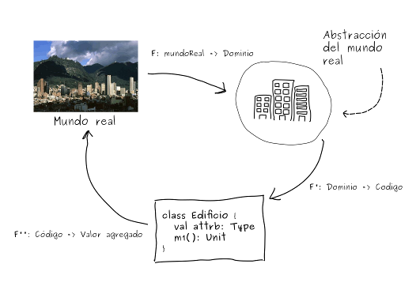

Durante una discusión tratando de explicar las responsabilidades de un equipo de desarrollo en los proyectos logramos llegar a definir cuál debería ser el objetivo cuando iniciamos el entendimiento de la problemática a resolver.
Para poder explicar la definición, necesito que el lector entienda dos conceptos: ImpedanciaObjeto-Relación y SimpatíaMecánica.
La ImpedanciaObjeto-Relación es el conjunto de dificultades técnicas y conceptuales que se encuentran cuando una base de datos relacional es utilizada por una aplicación escrita en un lenguaje orientado a objetos. Esta situación se encuentra, particularmente, cuando la definición de objetos y clases se quiere traducir en términos de tablas relacionales.
Aprovechando la definición de ImpedanciaObjeto-Relación puedo entonces introducir el concepto de ImpedanciaSemántica. ImpedanciaSemántica es la diferencia o distancia resultante al traducir un concepto encontrado en el MundoReal al modelo de dominio. El dominio resultante puede ser código fuente o un diagrama UML.
La SimpatíaMecánica de Martin Thompson consiste aprovechar consientemente las condiciones particulares del hardware por las aplicaciones de software para obtener los mejores resultados en un atributo de calidad: consistencia, desempeño, disponibilidad, etc.
Entendiendo los anteriores conceptos queda muy fácil definir la SimpatíaSemántica: consiste en minimizar la ImpedanciaSemántica entre el mundo real y la aplicación de software buscando aprovechar el funcionamiento el mundo real para aumentar el valor generado por la aplicación de software resultante.
La SimpatíaSemántica consta de tres hitos a los cuales se llegan a traves de tres transformaciones o Funciones, responsabilidad del equipo desarrollador.

La anterior es una esquematización de la labor del equipo de desarrollo cuando inicia un proyecto de software. Por lo general el equipo parte de una problemática encontrada en el mundo real. Esta problemática la esboza en un modelo el cual representa una Abstracción del mundo real. La Abstracción es luego traducida en código fuente el cual al compilarse y desplegarse en el ambiente de producción resuelve la problemática identificada en el mundo real generando valor de negocio.
Así, la labor del equipo puede dividirse en tres transformaciones:
La primera función se puede entender como una transformación del conocimiento y mecanismos encontrados en el MundoReal al diseño de una Abstracción del mismo en su semántica.
Se habla en términos de una Abstracción debido a que el equipo de desarrollo no modela todo el MundoReal. Por ejemplo: por lo general y dependiendo de la problemática a resolver sacamos de nuestras abstracciones la gravedad o la fricción o cualquier otro fenómeno físico existente en el MundoReal. Como equipo de desarrollo nos concentramos es en describir los mecanismos en términos de la semántica suficientes para caracterizar la problemática y solucionarla.
El hecho de que esta Abstracción haga uso de la misma semántica del MundoReal garantiza el aumento de la SimpatíaSemántica entre el dominio de la Función (el MundoReal) y el rango de la Función (la Abstracción).
Esta simpatía es deseable y provechosa en la medida en la que la Abstracción modela los mecanismos y relaciones entre definiciones encontradas en el MundoReal permitiendo que un cambio en este sea fácilmente replicable en la Abstracción.
Esta facilidad redundará en la CapacidadDeEvolución y CapacidadDeMantenimiento que tendrá la aplicación de software. Así mismo redundará en la cantidad positiva de valor generado por la aplicación.
En términos DDDesign la Abstracción no es más que el LenguajeUbícuo, el ModeloDeDominio y el conocimiento de negocio adquirido por el equipo de desarrollo.
Dado que la Abstracción se puede reducir al ModeloDeDominio, el LenguajeUbícuo y el conocimiento de negocio adquirido por el equipo de desarrollo, podemos hacer uso de los patrones tácticos de DDDesign para iniciar la construcción del CódigoFuente.
Es necesario destacar que en la medida en la que el equipo de desarrollo conozca de manera más profunda el MundoReal y tenga más cerca al experto de negocio esta transformación tendrá mayor SimpatíaSemántica. En casos en los que estas condiciones no se dan, por ejemplo, el Arquitecto PowerPoint o el Líder de Requerimientos, es inevitable que la SimpatíaSemántica se vea impactada negativamente.
Entre mayor sea la SimpatíaSemántica entre la Abstracción y el CódigoFuente, por transitividad, será mayor la SimpatíaSemántica entre el MundoReal y el CódigoFuente.
Si se logra una alta Simpatía entre el MundoReal y el CódigoFuente llegaremos a aplicaciones de software enriquecidas por los conceptos y mecanismos encontrados en el MundoReal a tal punto que el MundoReal se convierte en fuente de inspiración para resolver problemas de consistencia transaccional, distribución de cargas o cualquier otro atributo de calidad.
Esta transformación depende en gran medida de la calidad de código que se escriba. Así mismo dependerá de las habilidades en los distintos paradigmas de programación que tenga el equipo. Por ejemplo, el paradigma OO es un candidato intuitivo para hacer este tipo de transformación. No obstante si el equipo es diestro en el paradigma funcional podrá encontrar formas de modelar la Abstracción en funciones que pueden llegar a modelar de manera más precisa (o con mayor SimpatíaSemántica) un comportamiento de la Abstracción.
Si se siguió el proceso descrito en las secciones anteriores buscando en cada hito respetar y promover la SimpatíaSemántica se puede llegar a aseverar que la aplicación de software es rica en comportamientos y semática del MundReal.
También se puede afirmar que inclusive la UI de la aplicación se construyó en términos del MundoReal resultando en una UI intuitiva.
Si el usuario llega a solicitar una modificación a un funcionamiento podemos también pensar que esta modificación obedece a un cambio en el MundoReal y, como construimos nuestra aplicación siendo semánticamente simpática, podemos afirmar que este cambio será sencillo, predecible y fácilmente replicable impactando positivamente el valor agregado generado por la aplicación de software en el MundoReal.
El valor agregado entonces no se limitará a haber resuelto la problemática sino también a reducir el costo de propiedad, mantenimiento y evolución de la aplicación.
Todo este discurso nace de la necesidad de explicar cuál es la función de un equipo de desarrollo. Si estan de acuerdo conmigo, este proceso requiere de un gran esfuerzo intelectual, de comunicación y disciplina; habilidades y competencias que no son comunes en la industria.
Definí la SimpatíaSemántica con el propósito de encapsular en una sola definición las decisiones técnicas orientadas por el MundoReal y el proceso cognitivo mismo de un equipo de desarrollo cuando construye una aplicación de software porque, hacer software no es solo usar tecnologías. Hacer software no es solo comunicación a través de una metodología ágil y sus ceremonias. Hacer software no es solo hacer CRUD sobre datos.
Hacer software es generar valor al MundoReal y la SimpatíaSemántica es un mecanismo para alcanzar y medir ese valor.